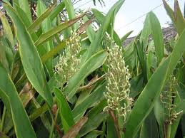
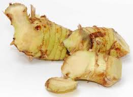

Tên khác:
Riềng, Riềng thuốc, Cao lương khương, Tiểu lương khương, Phong khương,
Tên khoa học: Alpinia officinarum Hance,
thuộc họ Gừng - Zingiberaceae.
Tên tiếng trung: 高良姜 (Cao lương khương)
Cây củ riềng
( Mô tả, hình ảnh, thu hái, chế biến, thành phần hoá học, tác dụng dược lý ....)

Mô tả: Cây thảo sống lâu, mọc thẳng cao 1-1,5m, thân rễ mọc bò ngang, chia thành nhiều đốt không đều nhau, màu đỏ nâu, phủ nhiều vẩy. Lá không cuống, có bẹ hình mác, mọc thành 2 dãy. Hoa màu trắng, tập hợp thành chùm thưa ở ngọn. Cánh môi to, có vân đỏ. Quả hình cầu, có lông, hạt có áo hạt.Mùa hoa quả tháng 5-9 và kéo dài đến hết năm.
Bộ phận dùng:Thân rễ - Rhizoma Alpiniae, thường gọi là củ riềng, Cao lương khương
Trồng bằng đoạn thân rễ vào mùa xuân, được 1 năm, có thể thu hoạch.
Phân bố:

Loài phân bố ở Việt Nam, thường gặp ở Trung Quốc. Ở nước ta, cây mọc hoang và được trồng lấy thân rễ làm gia vị và làm thuốc.
Thu hái thân rễ cuối mùa hè, chỉ chọn củ già, cắt bỏ rễ con, rửa sạch, cắt thành từng đoạn 4-6cm, phơi khô hoặc đồ qua rồi mới phơi.
Thành phần hoá học:
Thân rễ chứa tinh dầu mà thành phần chủ yếu là cineol và metylcinnamit. Còn có chất dầu vị cay là galangol và các dẫn chất của flavon ở dạng tinh thể là galangin, alpinin và kaempferin.
Trong rễ có 0,5-1,5% tinh dầu. Thành phần có Methyl Cinnamate, Eugenol, Pinene, Cadimene, Galangin, Kaempfende, Kaempferol, Quercetin, Isorhamnetin, Galangol (Trung Dược Học).
Tác dụng dược lý:
+ Ảnh hưởng lên hệ tiêu hoá: thí nghiệm cho thấy dùng nước sắc cao lương khương làm thức ăn cho chó làm cho tổng tiết axit dạ dầy tăng lên rõ rệt, nhưng không ảnh hưởng đến men pepsin
+ Thí nghiệm trên chuột, thấy nước sắc lương khương giảm bớt khả năng tiêu chẩy gây ra do phan tả diệp, nhưng không có tác dụng đối với tác dụng tẩy của dầu thầu dầu.
+ Tác dụng kháng khuẩn:: nước sắc Cao lương khương in vỉto có tác dụng ức chế nhiều loại vi khuẩn như trực khuẩn bạch hầu, liên cầu khuẩn dung huyết, Anthrax bacillus, song cầu khuẩn viêm phổi, tụ cầu vàng, trực khuẩn thương hàn, trực khuẩn lao (Trung Dược Học).
+ Nước sắc Cao lương khương có tác dụng hưng phấn ruột cô lập của súc vật thí nghiệm, nồng độ cao lại có tác dụng ức chế. Dầu thơm Lương khương có tác dụng kiện Vị (Trung Dược Học).
Vị thuốc củ riềng
( Công dụng, Tính vị, quy kinh, liều dùng .... )

Tính vị:Vị cay thơm, tính ấm
Qui kinh: Tỳ, Vị
Công dụng: có tác dụng lợi tiêu hóa, giảm đau, tán hàn.
Liều dùng: 8 -16g
Ứng dụng lâm sàng của vị thuốc củ riềng
Ðau thượng vị, loét tá tràng, đau dạ dày mạn tính:
Riềng, Hương phụ mỗi vị 60g, tán nhỏ thành bột, luyện viên, ngày dùng 9g, chia 3 lần.
Nôn mửa
Riềng, Bán hạ, Gừng, mỗi vị 10g, sắc nước uống.
Nếu nôn mửa có đau bụng, dùng 8g Riềng với 1 quả Táo sắc nước uống 2-3 lần trong ngày.
Sốt rét, kém tiêu hóa:
Riềng tẩm dầu vừng sao 40g. Gừng khô nướng 40g tán nhỏ, hòa mật lợn làm hoàn thành viên bằng hạt ngô, dùng uống ngày 15-20 viên.
Lang ben:
Riềng giã nát ngâm rượu hoặc giấm bôi.
Chữa hắc lào:
củ riềng già 100g, giã nhỏ, ngâm với 200ml rượu hoặc cồn 70 độ. Chiết ra dùng dần, khi dùng, bôi dung dịch cồn nói trên vào chỗ tổn thương, ngày bôi 2 – 3 lần.
Chữa ho, viêm họng, tiêu hóa kém:
riềng củ thái lát mỏng, đem muối chua, khi dùng có thể ngậm với vài hạt muối hoặc nhai nuốt dần
Chữa phong thấp:
riềng, vỏ quít, hạt tía tô mỗi vị 60g, sấy khô, tán nhỏ, mỗi lần dùng 4g, có thể pha với một chén nước sôi để nguội hoặc rượu, uống ngày 2 lần. Dùng trong 5 – 7 ngày
Chữa sốt rét:
bột riềng 300g, bột quế khô, bột thảo quả mỗi thứ 100g, tất cả đem trộn với mật làm viên to bằng hạt ngô. Mỗi ngày dùng 15 viên trước khi lên cơn. Hoặc riềng tẩm dầu vừng sao 40g, gừng khô nướng 35g tán nhỏ, hòa mật lợn làm hoàn thành viên bằng hạt ngô, uống ngày 15 – 20 viên
Tham khảo
Cách chữa bệnh đau dạ dày bằng củ riềng
Dùng củ riềng chữa đau dạ dày do hư hàn
Những người bệnh gặp phải chứng đau dạ dày do hư hàn thường có những biểu hiện như đau bụng (nhất là khi trời lạnh hay đói), cảm giác đầy bụng, nôn, đại tiện lỏng, sợ lạnh, lưỡi nhạt, rêu lưỡi trắng,… Dùng bài thuốc: củ riềng, hương phụ mỗi vị 6-10 g; bách hợp, đan sâm mỗi vị 30 g; ô dược 9-12 g; đinh hương 6-9 g; sa nhân 3-6 g. Tất cả đem sắc uống ngày 1 thang.
Dùng củ riềng chữa đau dạ dày cấp
Vị thuốc: củ riềng, thanh bì, trần bì, mộc hương, thạch xương bồ mỗi vị 6 g; đinh hương 4 g; sơn tra 15 g. \Bài thuốc sắc uống ngày một thang có tác dụng khắc phục các triệu chứng như đau bụng, nôn, chán ăn,…
Dùng củ riềng chữa chữa đau dạ dày
Bài thuốc: dùng củ riềng, cam thảo chích, tô mộc mỗi thứ 10g kết hợp với bạch thược sao 30g và bạch chỉ 15 g. Tất cả các vị thuốc đen tán bột, pha với nước đun sôi để uống hoặc đem sắc uống ngày một thang. Tác dụng: làm giảm các triệu chứng đau bụng, chân tay lạnh, trướng bụng,… do đau dạ dày.
Dùng củ riềng chữa chữa đau bụng do lạnh, nôn mửa Đây có thể là một chứng bệnh thường gặp phải ở nhiều người gây ảnh hưởng tới sinh hoạt và sức khỏe. Bệnh cần được chữa trị ngay để tránh bị nặng thêm. Mỗi khi thấy xuất hiện các triệu chứng như đau bụng (do lạnh, đói), nôn mửa, ăn uống kém, người bệnh có thể ngay lập tức sử dụng bài thuốc từ củ riềng sẽ rất hiệu quả.
Bài thuốc: củ riềng 8 g, đại táo 5 g. Bạn đen sắc thuốc như với sắc thuốc bắc thông thường rồi chia ra làm 2-3 lần uống trong ngày.
Kỹ thuật trồng và chăm sóc cây Riềng Đỏ
Riềng là cây chịu được bóng rợp, có thể trồng dưới tán cây thưa, góc vườn, chân bờ rào, bờ ao, ngõ ra vào với diện tích nhỏ. Nếu trồng tập trung với diện tích lớn nên cày bừa, làm đất kỹ. Cày rạch hàng với khoảng cách hàng cách hàng 60cm rồi rải phân chuồng, phân vi sinh để bón lót trên hàng với khoảng cách trồng cây cách nhau 50- 60cm. Những vùng đất miền núi giàu mùn, nhiều chất hữu cơ hoặc đất mới khai hoang lần đầu không cần bón phân lót mà chỉ cần bón thúc khi cây đã lớn và vào thời kỳ xuống củ là đủ.
- Kỹ thuật trồng: Thời vụ trồng tốt nhất là từ cuối tháng 2 đầu tháng 3, đến tháng 4 dương lịch. Tháng 5 riềng hình thành củ, tháng 7, tháng 8 là lúc cây tích lũy dinh dưỡng cao nhất, thu hoạch tập trung vào tháng 12, tháng 1 năm sau. Ngoài ra, theo kinh nghiệm của nông dân Xuân Mai thì riềng đỏ lai có thể trồng quanh năm để thu hoạch củ quanh năm (khác với các giống khác), trừ các tháng khô hạn hoặc mưa nhiều củ dễ bị hư thối. Có thể trồng trực tiếp bằng củ giống, hoặc bằng cây con tách ra từ cây mẹ. Nếu trồng bằng củ thì chọn những củ bánh tẻ không bị xây xát, hư thối để trồng. Mỗi củ có thể cắt thành nhiều đoạn, mỗi đoạn có ít nhất 2-3 mầm mắt để tiết kiệm chi phí tiền giống. Ngoài ra cũng có thể tách 1-2 cây trong bụi để đem trồng (với diện tích nhỏ, hoặc trồng dặm ở những chỗ bị khuyết thiếu hay chết cây). Trồng theo hốc đã bón phân theo khoảng cách đã nói ở trên với độ sâu 10-12cm, đặt củ có mầm quay lên trên, lấp nhẹ đất bột, dện chặt và phủ rác hoặc rơm rạ rồi tưới đủ ẩm.
- Chăm sóc: Thời gian đầu tưới đủ ẩm, tạo điều kiện để cây riềng sống và nẩy chồi nhanh. Khi riềng đã ra rễ có thể tưới thêm phân chuồng pha loãng. Khi lá, thân phát triển cần bón bổ sung để phát triển củ (bón 0,3-1kg phân chuồng hoặc 0,5 kg phân vi sinh/bụi). Khi thấy riềng xuống củ nên bón thêm kali để tăng năng suất và chất lượng củ. Riềng lai đỏ sinh trưởng rất mạnh do đó chỉ cần làm sạch cỏ 1-2 tháng đầu, sau đó tán lan rộng, cỏ không phát triển được nữa. Khác với các giống riềng, gừng khác, củ và thân riềng lai đỏ ăn ngang và phát triển lên trên do đó không được xới xáo làm ảnh hưởng đến rễ và củ. Tuy không phải lên luống nhưng cần xẻ các rãnh xung quanh để thoát nước cho riềng trong mùa mưa tránh bị thối hỏng do úng ngập. Giống riềng lai đỏ rất cay nên không bị chuột phá hại, hầu như không có loại sâu nào gây hại do đó không cần phun thuốc.
- Thu hoạch: Nếu lấy củ làm giống thì có thể thu hoạch sau trồng 1 năm, nhưng để thu hoạch bán củ thì thu hoạch sau 2 năm trồng mới cho chất lượng tốt, sản lượng cao. Khi thấy cây đã già, thân ngầm và củ đã nổi rõ hoặc làm nứt mặt đất quanh gốc, đào thử thấy củ đã già là thu hoạch được. Cắt sạch rễ, rửa sạch bán tươi hoặc thái phơi khô theo yêu cầu của nơi tiêu thụ.
Kỹ thuật trồng và chăm sóc để các địa phương có điều kiện tương tự nghiên cứu, áp dụng.
- Chọn nơi trồng và làm đất: Riềng là cây chịu được bóng rợp, có thể trồng dưới tán cây thưa, góc vườn, chân bờ rào, bờ ao, ngõ ra vào với diện tích nhỏ. Nếu trồng tập trung với diện tích lớn nên cày bừa, làm đất kỹ. Cày rạch hàng với khoảng cách hàng cách hàng 60cm rồi rải phân chuồng, phân vi sinh để bón lót trên hàng với khoảng cách trồng cây cách nhau 50- 60cm. Những vùng đất miền núi giàu mùn, nhiều chất hữu cơ hoặc đất mới khai hoang lần đầu không cần bón phân lót mà chỉ cần bón thúc khi cây đã lớn và vào thời kỳ xuống củ là đủ.
- Kỹ thuật trồng: Thời vụ trồng tốt nhất là từ cuối tháng 2 đầu tháng 3, đến tháng 4 dương lịch. Tháng 5 riềng hình thành củ, tháng 7, tháng 8 là lúc cây tích lũy dinh dưỡng cao nhất, thu hoạch tập trung vào tháng 12, tháng 1 năm sau. Ngoài ra, theo kinh nghiệm của nông dân Xuân Mai thì riềng đỏ lai có thể trồng quanh năm để thu hoạch củ quanh năm (khác với các giống khác), trừ các tháng khô hạn hoặc mưa nhiều củ dễ bị hư thối. Có thể trồng trực tiếp bằng củ giống, hoặc bằng cây con tách ra từ cây mẹ. Nếu trồng bằng củ thì chọn những củ bánh tẻ không bị xây xát, hư thối để trồng. Mỗi củ có thể cắt thành nhiều đoạn, mỗi đoạn có ít nhất 2-3 mầm mắt để tiết kiệm chi phí tiền giống. Ngoài ra cũng có thể tách 1-2 cây trong bụi để đem trồng (với diện tích nhỏ, hoặc trồng dặm ở những chỗ bị khuyết thiếu hay chết cây). Trồng theo hốc đã bón phân theo khoảng cách đã nói ở trên với độ sâu 10-12cm, đặt củ có mầm quay lên trên, lấp nhẹ đất bột, dện chặt và phủ rác hoặc rơm rạ rồi tưới đủ ẩm.
- Chăm sóc: Thời gian đầu tưới đủ ẩm, tạo điều kiện để cây riềng sống và nẩy chồi nhanh. Khi riềng đã ra rễ có thể tưới thêm phân chuồng pha loãng. Khi lá, thân phát triển cần bón bổ sung để phát triển củ (bón 0,3-1kg phân chuồng hoặc 0,5 kg phân vi sinh/bụi). Khi thấy riềng xuống củ nên bón thêm kali để tăng năng suất và chất lượng củ. Riềng lai đỏ sinh trưởng rất mạnh do đó chỉ cần làm sạch cỏ 1-2 tháng đầu, sau đó tán lan rộng, cỏ không phát triển được nữa. Khác với các giống riềng, gừng khác, củ và thân riềng lai đỏ ăn ngang và phát triển lên trên do đó không được xới xáo làm ảnh hưởng đến rễ và củ. Tuy không phải lên luống nhưng cần xẻ các rãnh xung quanh để thoát nước cho riềng trong mùa mưa tránh bị thối hỏng do úng ngập. Giống riềng lai đỏ rất cay nên không bị chuột phá hại, hầu như không có loại sâu nào gây hại do đó không cần phun thuốc.
- Thu hoạch: Nếu lấy củ làm giống thì có thể thu hoạch sau trồng 1 năm, nhưng để thu hoạch bán củ thì thu hoạch sau 2 năm trồng mới cho chất lượng tốt, sản lượng cao. Khi thấy cây đã già, thân ngầm và củ đã nổi rõ hoặc làm nứt mặt đất quanh gốc, đào thử thấy củ đã già là thu hoạch được. Cắt sạch rễ, rửa sạch bán tươi hoặc thái phơi khô theo yêu cầu của nơi tiêu thụ.
Nguồn tin: CÔNG TY TNHH XUẤT NHẬP KHẨU NÔNG SẢN VIỆT TUẤN
Nơi mua bán vị thuốc Củ Riềng -Cao lương khương đạt chất lượng ở đâu?
Trước thực trạng thuốc đông dược kém chất lượng, nguồn gốc không rõ ràng,... xuất hiện tràn lan trên thị trường, làm ảnh hưởng tới hiệu quả điều trị cũng như ảnh hưởng tới sức khỏe của bệnh nhân. Việc lựa chọn những địa chỉ uy tín để mua thuốc đông dược là rất quan trọng và cần thiết. Vậy khách hàng có thể mua vị thuốc Củ Riềng -Cao lương khương ở đâu?
Củ Riềng -Cao lương khương là vị thuốc nam quý, được sử dụng rộng rãi trong YHCT. Hiện tại hầu hết các cửa hàng thuốc đông dược, phòng khám đông y, phòng chẩn trị YHCT... đều có bán vị thuốc này. Tuy nhiên người mua nên chọn những địa chỉ có uy tín, đảm bảo chất lượng, có giấy phép hoạt động để mua được vị thuốc đạt chất lượng.
Với mong muốn bệnh nhân được sử dụng những loại dược liệu đúng, chất lượng tốt, phòng khám Đông y Nguyễn Hữu Toàn không chỉ là đia chỉ khám chữa bệnh tin cậy, uy tín chất lượng mà còn cung cấp cho khách hàng những vị thuốc đông y (thuốc nam, thuốc bắc) đúng, chuẩn, đạt chuẩn chất lượng. Các vị thuốc có trong tiêu chuẩn Dược điển Việt Nam đều được nghành y tế kiểm nghiệm đạt chất lượng tiêu chuẩn.
Vị thuốc Củ Riềng -Cao lương khương được bán tại Phòng khám là thuốc đã được bào chế theo Tiêu chuẩn NHT.
Giá bán vị thuốc Củ Riềng -Cao lương khương tại Phòng khám Đông y Nguyễn Hữu Toàn: Gọi 18006834 để biết chi tiết
Tùy theo thời điểm giá bán có thể thay đổi.
+ Khách hàng có thể mua trực tiếp tại địa chỉ phòng khám: Cơ sở 1: Số 481 lô 22 Lê Hồng Phong, Phường Gia Viên, Thành phố Hải Phòng
+ Mua trực tuyến: Thuốc được chuyển qua đường bưu điện. Khi nhận được thuốc khách hàng thanh toán tiền COD.
Tag: cay cu rieng- cao luong khuong, vi thuoc cu rieng- cao luong khuong, cong dung cu rieng- cao luong khuong, Hinh anh cay cu rieng- cao luong khuong, Tac dung cu rieng- cao luong khuong, Thuoc nam
Thaythuoccuaban.com Tổng hợp
*************************